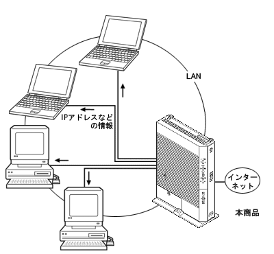

| DHCPv4サーバ |
DHCP(Dynamic Host Configuration Protocol)サーバとは、LAN上のパソコンが起動すると、その都度、IPアドレスなどのネットワーク利用に必要な設定情報を、本商品から各パソコンに自動的に割り当てる機能です。
これにより、各パソコンでネットワークの詳細な設定を行わなくても、LANやインターネットに接続できます。 |
|  | |
| 設定方法 |
| ■ 「Web設定」 |
|
| |
＜お願い＞
- 本商品のDHCPv4サーバを使用せずに運用する場合には､「DHCPv4サーバ設定」で「DHCPv4サーバ機能」の「使用する」のチェックを外し、パソコンのネットワークの設定をする必要があります。
- 「DHCPv4サーバ設定」で「LAN側IPアドレス」を変更した場合は、「DHCPv4サーバ」の「開始IPアドレス」やパソコンのネットワーク設定も、必ず「LAN側IPアドレス」に合わせて変更してください。正しく設定しないと各パソコンが本商品と通信できなくなります。
| |
|
|
↑ページのトップへ |